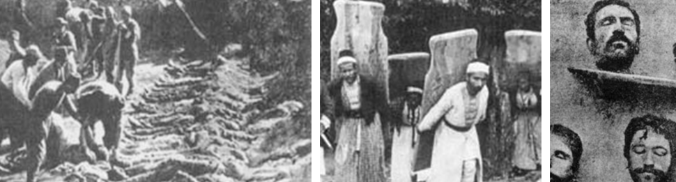
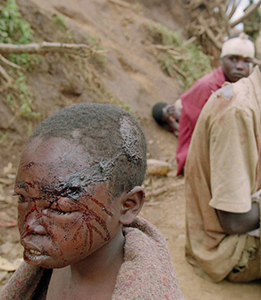
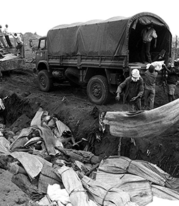
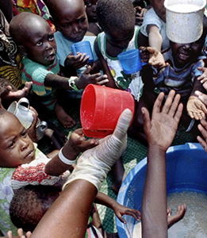

Otros genocidios
¿Qué es un genocidio?
Según la Convención para la Prevención y Sanción del Delito de Genocidio de 1948: cualquiera de los actos mencionados a continuación, perpetrados con la intención de destruir, total o parcialmente, a un grupo nacional, étnico, racial o religioso, como tal:
a) Matanza de miembros del grupo;
b) Lesión grave a la integridad física o mental de los miembros del grupo;
c) Sometimiento intencional del grupo a condiciones de existencia que hayan de acarrear su destrucción física, total o parcial;
d) Medidas destinadas a impedir los nacimientos en el seno del grupo;
e) Traslado por fuerza de niños del grupo a otro grupo.
¿Qué genocidios existieron?
En los últimos 150 años, decenas de millones de hombres, mujeres y niños han perdido sus vidas en genocidios. Millones fueron torturados, violados y obligados a abandonar sus hogares.
Conocer y estudiar estos episodios tan terribles nos hace comprender cuáles son las consecuencias de dejar ocurrir un genocidio y la relevancia de hacer algo para prevenirlos. Aprender de la historia es el primer paso que podemos dar para luchar contra los genocidios.
Además del Holocausto, la comunidad internacional reconoce los siguientes genocidios:
Genocidio armenio (1915-1918)
Se desarrolló en el marco de la Primera Guerra Mundial a manos del gobierno turco. Los armenios era una minoría cristiana que vivía en territorios dominados por el Imperio Otomano y el Imperio Zarista.
Al comenzar el siglo XX se produjeron cambios políticos de importancia en el Imperio Turco. Un grupo llamado Jóvenes Turcos se adueñó del poder y su objetivo fue crear una Nueva Turquía. Desde el punto de vista ideológico se ubicaron en la corriente nacionalista con fuerte pensamiento xenófobo, de odio al extranjero (cabe aclarar que los Armenios hacía siglos vivían en el mismo territorio que los Turcos conservando su propia religión, idioma y costumbres). Desde el punto de vista turco los armenios no encajaban con su ideal de nación y progreso social. Por lo tanto debían ser exterminados.
El exterminio fue no solo a las personas sino a su cultura, tradición y memoria. Dijo un dirigente turco: “Es necesario que la nación armenia sea desarraigada, que no quede en nuestro territorio un solo armenio. Estamos en guerra; jamás se nos presentará mejor oportunidad. Las intervenciones y las protestas de las grandes potencias serán olvidadas e intrascendentes ante el hecho consumado. Esta vez el aniquilamiento de los armenios será total” (Dr. Nazim Fethi, integrante del Cuerpo Ejecutivo Tripartito responsable de la aniquilación del pueblo armenio).
Los otomanos utilizaron formas de matar brutales y despiadadas: sitiando y prendiendo fuego pueblos enteros, hundiendo botes llenos de personas, contagiando adrede a niños de enfermedades mortales, en marchas de la muerte, entre otras. Entre las deportaciones, ejecuciones y epidemias en los campos de concentración, se estima que fueron asesinadas más de 1.000.000 de personas.
">
Camboya (1975-1979)
Cuando el régimen de los Jemeres Rojos bajo la dirección de Pol Pot, su principal líder, tomó control del gobierno de Camboya en 1975, declararon la instauración de una nueva era dedicada a una sociedad campesina. La educación, la religión, la salud y la tecnología pasaron a ser ilegales y obligaron la evacuación de las ciudades. Las víctimas fueron forzadas a instalarse en el campo y trabajar en pésimas condiciones de vida. Aquellos que no toleraban el ritmo de trabajo eran asesinados. Al mismo tiempo, el régimen perseguía a sus "enemigos" ya fueran políticos, religiosos o culturales. En cuatro años, entre 1.700.000 y 2.000.000 de personas fueron asesinadas a manos del régimen.
Ruanda (1994)
Ruanda es un país situado en África con 8.000.000 de habitantes. Fue colonia belga hasta 1962 cuando logró la independencia. Al iniciarse el genocidio en 1994 su población se componía de un 85% hutus y un 15% tutsis. Los hutus eran mayoritariamente agricultores mientras los tutsi ganaderos. La rivalidad entre ambas etnias data del siglo XV por cuestiones económicas (fundamentalmente la tenencia de tierras), pero también por razones políticas: el gran poder que Bélgica dio a los tutsi en el aparato del Estado colonial.
La muerte violenta del Presidente de la República (hutus) encendió la chispa del terror y la matanza tribal. Comenzó el 6 de abril de 1994 y durante cinco meses fueron asesinados entre 800.000 y 1.000.000 de tutsis a manos de los hutus. Más de 2.000.000 debieron refugiarse en países vecinos para salvar sus vidas.
El exterminio adquirió ribetes que reflejaron hasta dónde puede llegar la maldad humana: extremidades amputadas con machetes, ejecución de niños y bebés, cientos de personas quemadas vivas, violaciones en masa y otras atrocidades. Desde la radio estatal (medio masivo de comunicación) se alentó al asesinato de los vecinos tutsis.



Bosnia Herzegovina (1995)
Con la caída de la Unión Soviética a comienzos de 1990, Yugoslavia comenzó a dividirse en repúblicas, lo que llevó a fuertes enfrentamientos étnicos y desplazamientos de población. En 1992, Bosnia y Herzegovina declaró su independencia y la región rápidamente se convirtió en zona de batalla entre serbios, croatas y bosnios musulmanes, todos quienes habitaban Bosnia y querían o bien tomar el control del gobierno o evitar que otros grupos lo hicieran. Todos cometieron terribles abusos contra la población civil, utilizando violaciones, tortura, ejecuciones y decapitaciones públicas para asesinar. Los serbo-bosnios llegaron a internar a civiles bosnios musulmanes en campos de concentración. Las unidades serbo-bosnias fueron las más crueles y cometieron atrocidades, incluyendo el genocidio de Srebrenica, en el cual el General Ratko Mladic supervisó el asesinato de alrededor de 8.000 hombres y chicos bosnios musulmanes que luego fueron enterrados en fosas comunes. En 1993 la ONU creó el Tribunal Penal Internacional de Yugoslavia para juzgar a los líderes y oficiales de todas las partes que perpetraron crímenes. La paz llegó en 1995, pero se estima que más de 96.000 personas fueron asesinadas durante el conflicto.
Darfur (2003)
El genocidio de Darfur, una región de Sudán Occidental donde viven 6.000.000 de personas, comenzó en 2003.
Luego de que Sudán se independizó del Imperio Británico en 1956, el país se vio sumergido en largas guerras civiles, motivadas en gran medida por la lucha por recursos. El gobierno prestó especial atención a Darfur, donde en la década de 1980 se descubrió petróleo.
Las tensiones y violencia escalaron rápidamente hasta que en 2003 miembros de tribus árabes (los Yanyauid), apoyados por el gobierno sudanés, comenzaron a atacar sistemáticamente aldeas no árabes en Darfur con el objetivo de eliminar a la población de la región y crear un Estado árabe. Los ataques a las aldeas comenzaron con bombardeos de la fuerza aérea sudanesa y fueron seguidos por incursiones de las milicias Yanyauid. Todos los habitantes fueron asesinados o forzados a huir. Las aldeas fueron saqueadas e incendiadas y las mujeres y niñas violadas o esclavizadas.
La ONU envió varias misiones de paz a Darfur sin ningún éxito. En 2009 la Corte Penal Internacional emitió una orden de arresto para el presidente sudanés Omar Bashir por crímenes contra la humanidad y cargos por genocidio. El gobierno de Sudán ha hecho oídos sordos.
Según la ONU, más de 2.700.000 personas han sido desplazadas de sus hogares y más de 350.000 se han refugiado en países vecinos. Más de 400.000 personas han sido asesinadas. El gobierno sudanés niega cualquier tipo de responsabilidad en estas muertes.